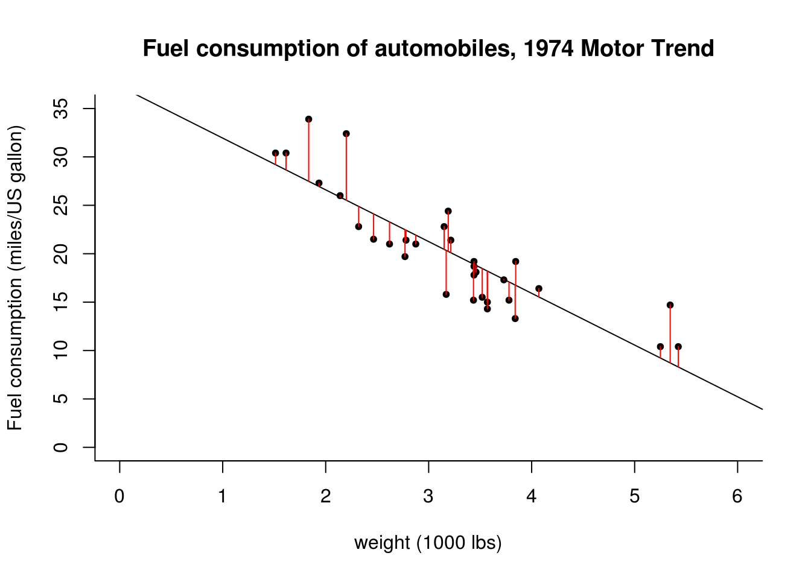

2.2 Parameter estimation
We are now ready to fit a linear model with an intercept and a linear effect for the weight. The model will be of the form \[ \texttt{mpg}_i = \beta_0 + \texttt{wt}_i\beta_1 +\varepsilon_i.\] We form the design matrix \((\boldsymbol{1}_n^\top, \texttt{wt}^\top)^\top\) and the vector of regressand \(\texttt{mpg}\), then proceed with calculating the OLS coefficients \(\hat{\boldsymbol{\beta}}\), the hat matrix \(\mathbf{H}_{\mathbf{X}}\), the fitted values \(\hat{\boldsymbol{y}}\) and the residuals \(\boldsymbol{e}\).
#Design matrix
wt <- mtcars$wt
X <- cbind(1, wt)
mpg <- mtcars$mpg
#OLS estimates
XtXinv <- solve(crossprod(X))
beta_hat <- c(XtXinv %*% t(X) %*% mpg)
#Form orthogonal projection matrix
Hmat <- X %*% XtXinv %*% t(X)
#Create residuals and fitted values
fitted <- Hmat %*% mpg
res <- mpg - fitted
fitted <- Hmat %*% mpg
#Variance estimate and standard errors
s2 <- sum(res^2) / (length(res) - ncol(X))
std_err <- sqrt(diag(s2 * XtXinv))The residuals \(\boldsymbol{e} = \boldsymbol{y} -\hat{\boldsymbol{y}}\) can be interpreted as the vertical distance between the regression slope and the observation. This is illustrated in the following graph. For each observation \(y_i\), a vertical line at distance \(e_i\) is drawn from the prediction \(\hat{y}_i\).
Side remark: graphs and table should always be properly labelled (including units). The last line of the call to plot contains cosmetic options that alter the display of the scatterplot — you can check for yourself the effects of removing any (all) of these additional commands.
plot(mpg ~ wt, xlab = "weight (1000 lbs)", ylab = "miles/US gallon",
main = "Fuel consumption of automobiles, 1974 Motor Trend", data = mtcars,
bty = "l", pch = 20, ylim = c(0, 35), xlim = c(0, 6)) #options to tweak the display
#Line of best linear fit
abline(a = beta_hat[1], b = beta_hat[2], col = "blue", lwd = 2)
#Residuals are vertical distance from line to
for(i in 1:nrow(X)){
segments(x0 = wt[i], y0 = fitted[i], y1 = fitted[i] + res[i], col = 2)
}